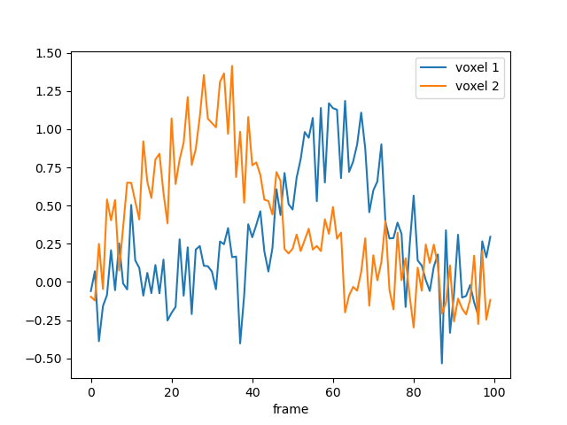

Lesson 1: Encoding models#
Encoding models#
Standard encoding models, like 2D PRF models that are used in retinotopic mapping, but also models of numerosity and Gabor orientations define determinsitic one-to-one mapping from stimulus space to BOLD response space:
- Here:
The stimulus \(s\) is some point in a n-dimensional feature space. For example, \(s\) could be the numerosity of a stimulus array, the orientation of a Gabor patch, or a 2D image.
\(x\) is a BOLD activation pattern in a single voxel. This could both be a single-trial estimate, or the actual activity pattern on a given timepoint \(t\)
\(\theta\) is a set of parameters tha define the particular mapping of a particular voxel. For example, the center and dispersion of a 2D PRF, or the preferred orientation of a Gabor patch. In some cases, \(\theta\) is fitted to data. In other cases, it is fixed.
Concrete example#
One standard encoding model is the 1D Gaussian PRF. This is simply the probability density of a 1D Gaussian distribution, centered at \(\mu\) and with dispersion \(\sigma\), evaluated at \(x\), multiplied by an amplitude \(a\): and added to a baseline \(b\):
Simulate data#
This model is implemented in the GaussianPRF class in braincoder.models:
from braincoder.models import GaussianPRF
import pandas as pd
import numpy as np
# We set up two PRFS, one centered at 1 and one centered at -2
# The first one has a sd of 1 and the second one has a sd of 1.5
parameters = [{'mu':1.0, 'sd':1.0, 'amplitude':1.0, 'baseline':0.0},
{'mu':-2., 'sd':1.5, 'amplitude':1.0, 'baseline':0.0}
]
parameters = pd.DataFrame(parameters, index=['voxel 1', 'voxel 2'])
# We have a virtual experimental paradigm where we go from -5 to 5
paradigm = np.linspace(-5, 5, 100)
# Set up the model.
model = GaussianPRF(paradigm=paradigm, parameters=parameters)
# Extract and plot the predictions
predictions = model.predict()
predictions.index = pd.Index(paradigm, name='Stimulus value')
ax = predictions.plot()

We can also simulate noisy data and try to estimate back the generating parameters:
data = model.simulate(noise=0.2)
data.plot()

Estimate parameters#
Then we can try to estimate back the generating parameters using a grid search. This code automatically picks, for each voxel, the parameters that maximize the correlation between the predicted and actual BOLD response:
# the paradigm, and the model
from braincoder.optimize import ParameterFitter
from braincoder.utils import get_rsq
optimizer = ParameterFitter(model, data=data, paradigm=paradigm)
# Set up a grid search over the parameters
possible_mus = np.linspace(-5, 5, 10)
possible_sds = np.linspace(0.1, 5, 10)
# For the grid search we use a correlation cost function, so we can fit
# the amplitude an baseline later using OLS
possible_amplitudes = [1.0]
possible_baselines = [0.0]
# Fit the grid
grid_pars = optimizer.fit_grid(possible_mus, possible_sds, possible_amplitudes, possible_baselines, use_correlation_cost=True, progressbar=False)
# Show the results
grid_pars
The grid search only optimized for the center and dispersion of the Gaussian,
but we also want to optimize for the amplitude and baseline,
using ordinary least squares (note that this is computationally much cheaper than adding
amplitude and baseline to the grid search).
Now we minimize the sum of squared errors between the predicted and actual BOLD response
R2.
grid_pars = optimizer.refine_baseline_and_amplitude(grid_pars)
# Show the fitted timeseries
import matplotlib.pyplot as plt
import seaborn as sns
palette = sns.color_palette()
grid_pred = model.predict(parameters=grid_pars)
# See how well the predictions align with the data
# using the explained variance statistic
r2_grid = get_rsq(data, grid_pred)
plt.plot(paradigm, data)
plt.plot(paradigm, grid_pred, ls='--', c='k', label='Grid prediction')
plt.title(f'R2 = {r2_grid.mean():.2f}')
This grid-optimized parameters already fit the data pretty well.
Note how we can use get_rsq to calculate the fraction of explained variance R2
between the predicted and actual BOLD response. This is the exact same R2 that is used
to optimize the parameters on.
We can do even better using gradient descent optimisation. Note that because braincoder uses tensorflow, it uses autodiff-calculated exact gradients, as well as the GPU to speed up the computation. This is especially useful for more complex models. braincoder is under some circumstances multiple orders of magnitude faster than other PRF libraries.
gd_pars = optimizer.fit(init_pars=grid_pars, progressbar=False)
gd_pred = model.predict(parameters=gd_pars)
r2_gd = get_rsq(data, gd_pred)
plt.plot(paradigm, data)
plt.plot(paradigm, grid_pred, ls='--', c='k', alpha=0.5, label='Grid prediction')
plt.plot(paradigm, gd_pred, ls='--', c='k', label='Gradient descent prediction')
plt.title(f'R2 = {r2_gd.mean():.2f}')

Note
The complete Python script its output can be found here.
Summary#
- In this lesson we have seen:
Encoding models define a deterministic mapping from stimulus space to BOLD response space
braincoder allows us to define all kins of encoding models, and to fit them to data
braincoder uses tensorflow to speed up the computation, and to allow for gradient descent optimisation
Fitting encoding models usually take the following steps: * Set up a grid of possible non-linear parameter values, and find best-fitting ones (
optimizer.fit_grid()) * Fit linear parameters using ordinary least squares (optimizer.refine_amplitude_baseline()) * Finialize fit using gradient descent (optimizer.fit()
In the next lesson, we will see how we can fit linear encoding models.